දියවැඩියාව යනු කුමක්ද?
நீரிழிவு என்றால் என்ன?
- ශරීරයේ ශක්තිය සඳහා රුධිරයේ ඇති සීනි ශරීර සෛල තුළට යැවීමට ඉන්සියුලින් උපකාරී වේ.
- දියවැඩියාවේදී ඉන්සියුලින් ප්රමාණවත් නොවේ, නැතහොත් නිසි ලෙස ක්රියා නොකරයි. එමනිසා රුධිරයේ සීනි ඉහළ මට්ටමක පවතී.
- ගර්භනී කාන්තාවන්ගේ:
- ගර්භණීභාවයට පෙර සිට ඇති දියවැඩියාව (වර්ග 1 හෝ වර්ග 2).
- ගර්භනී දියවැඩියාව (GDM) - ගර්භණීභාවයේදී ආරම්භ වී සාමාන්යයෙන් ප්රසූතියෙන් පසු සුව වේ.
- ගර්භනී නොවන කාන්තාවන්ගේදී: බොහෝවිට වර්ග 2 දියවැඩියාව.
- දකුණු ආසියානු කාන්තාවන් අතර දියවැඩියාව සුලභ බැවින්, ශ්රී ලංකාවේ සියලුම ගර්භනී කාන්තාවන් පරීක්ෂා කරනු ලැබේ.
- இரத்தத்தில் உள்ள சர்க்கரையை சக்திக்காக உடற்கலங்களுக்குள் அனுப்ப இன்சுலின் உதவுகிறது.
- நீரிழிவில் இன்சுலின் போதுமானதாக இல்லை, அல்லது சரியாக வேலை செய்யாது. இரத்தத்தில் சர்க்கரை அதிகமாக இருக்கும்.
- கர்ப்பிணிகளில்:
- கர்ப்பத்திற்கு முன்பிருந்தே உள்ள நீரிழிவு (வகை 1 அல்லது வகை 2).
- கர்ப்பகால நீரிழிவு (GDM) - கர்ப்பத்தின்போது தொடங்கி, பொதுவாகப் பிரசவத்திற்குப் பின் சரியாகிவிடும்.
- கர்ப்பமில்லாத பெண்களில்: பெரும்பாலும் வகை 2 நீரிழிவு.
- தென்னாசியப் பெண்களுக்கு நீரிழிவு அதிகமாக வருவதால், இலங்கையில் எல்லாக் கர்ப்பிணிகளுக்கும் பரிசோதனை செய்யப்படுகிறது.
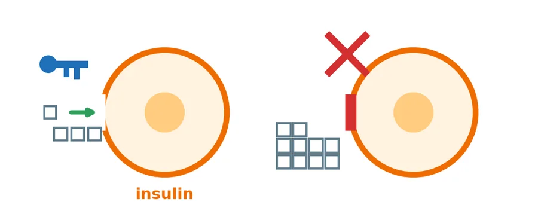
සීනි පාලනය කළ යුත්තේ ඇයි?
சர்க்கரையை ஏன் கட்டுப்படுத்த வேண்டும்?
| සීනි ඉහළ ගියොත් | සිදුවිය හැකි දේ |
|---|---|
| ගර්භනී | දරුවා විශාල වීම, ප්රසූතිය අපහසු වීම, උපතින් පසු දරුවාගේ සීනි අඩු වීම, අධි රුධිර පීඩනය, ආසාදන, සිසේරියන් වැඩි වීම |
| ගර්භනී නොවන | ශල්යකර්මයෙන් පසු සුවය ප්රමාද වීම, තුවාල සහ ගර්භාෂ ආසාදන, යීස්ට් (කැසීම සහිත සුදු ස්රාවය), මුත්රා ආසාදන, ඇස්, වකුගඩු, ස්නායු සහ හදවත් රෝග |
- හොඳින් පාලනය කළ විට සෞඛ්ය සම්පන්න දරුවන් ලැබේ. ආරක්ෂිත ලෙස ශල්යකර්ම කරගැනීමට හැකි වේ.
| சர்க்கரை அதிகமாக இருந்தால் | ஏற்படக்கூடியவை |
|---|---|
| கர்ப்பிணி | குழந்தை பெரிதாதல், கடினமான பிரசவம், பிறந்த பின் குழந்தையின் சர்க்கரை குறைதல், உயர் இரத்த அழுத்தம், தொற்றுகள், அதிக சிசேரியன் |
| கர்ப்பமில்லாதவர் | அறுவைச் சிகிச்சைக்குப் பின் காயம் ஆறத் தாமதம், காயம் மற்றும் கருப்பைத் தொற்றுகள், பூஞ்சைத் தொற்று (அரிப்புடன் வெள்ளைப்படுதல்), சிறுநீர்த் தொற்றுகள், கண், சிறுநீரகம், நரம்பு மற்றும் இதய நோய்கள் |
- நன்கு கட்டுப்படுத்தினால் ஆரோக்கியமான குழந்தைகளும் பாதுகாப்பான அறுவைச் சிகிச்சைகளும் கிடைக்கும்.
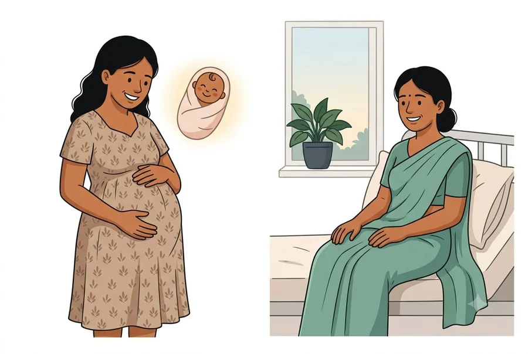
ඔබේ සීනි ඉලක්ක
உங்கள் சர்க்கரை இலக்குகள்
| වේලාව | ගර්භනී (mg/dL) | ගර්භනී නොවන |
|---|---|---|
| නිරාහාරව (උදේ ආහාරයට පෙර) | 95 ට අඩු | මෙහි ලියන්න: ____ [CHECK] |
| ආහාරය ආරම්භ කර පැය 1 කට පසු | 140 ට අඩු | |
| ආහාරය ආරම්භ කර පැය 2 කට පසු | 120 ට අඩු | මෙහි ලියන්න: ____ |
- 70 ට අඩු වීම ඉතා පහළ මට්ටමකි. D-16 බලන්න.
| நேரம் | கர்ப்பிணி (mg/dL) | கர்ப்பமில்லாதவர் |
|---|---|---|
| வெறும் வயிற்றில் (காலை உணவுக்கு முன்) | 95 க்குக் குறைவு | |
| உணவு தொடங்கி 1 மணி நேரத்திற்குப் பின் | 140 க்குக் குறைவு | |
| உணவு தொடங்கி 2 மணி நேரத்திற்குப் பின் | 120 க்குக் குறைவு |
- 70 க்குக் குறைவது மிகவும் குறைந்த அளவு. D-16 ஐப் பார்க்கவும்.
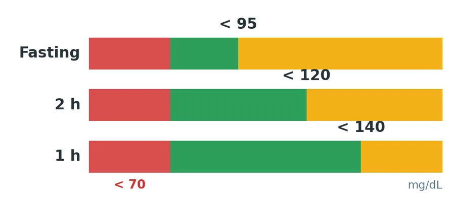
නිවසේදී සීනි පරීක්ෂා කිරීම
வீட்டில் சர்க்கரை பரிசோதனை
- සබන් සහ උණු වතුරෙන් අත් සෝදා හොඳින් වියළන්න.
- මීටරයට අලුත් ස්ට්රිප් එකක් දමන්න.
- අලුත් ලැන්සෙට් එකකින් ඇඟිල්ලේ පැත්තට අනින්න. සෑම වතාවකම වෙනත් ඇඟිල්ලක් භාවිතා කරන්න.
- ලේ බිංදුවක් ස්ට්රිප් එකට ස්පර්ශ කරන්න.
- ප්රතිඵලය සහ වේලාව ලියා තබන්න.
- ලැන්සෙට් එක තියුණු දේ දමන බෝතලයට දමන්න.
- ගර්භනී: නිරාහාරව, සහ උදේ, දහවල් සහ රාත්රී ආහාරවල ආහාර ගැනීම ආරම්භ කල වෙලේ සිට පැය 2 කට පසු. ඉන්සියුලින් ගන්නේ නම් නිදාගැනීමට පෙරද.
- ගර්භනී නොවන: සායනයෙන් උපදෙස් දෙන පරිදි.
- සෑම පැමිණීමකටම ඔබේ සටහන් පොත හෝ සායන පොත ගෙන එන්න.
- சோப்பு மற்றும் வெதுவெதுப்பான நீரால் கைகளைக் கழுவி நன்கு உலர்த்தவும்.
- மீட்டரில் புதிய ஸ்டிரிப் செருகவும்.
- புதிய லான்செட்டால் விரல் நுனியின் பக்கத்தில் குத்தவும். ஒவ்வொரு முறையும் வேறு விரலைப் பயன்படுத்தவும்.
- இரத்தத் துளியை ஸ்டிரிப்பில் தொடவும்.
- முடிவையும் நேரத்தையும் எழுதி வைக்கவும்.
- லான்செட்டை கூரான பொருட்களுக்கான போத்தலில் போடவும்.
- எப்போது (கர்ப்பிணி): வெறும் வயிற்றில், மேலும் காலை, மதியம், இரவு உணவின் முதல் கவளத்திலிருந்து 2 மணி நேரத்திற்குப் பின். இன்சுலின் எடுப்பவர்கள் படுக்கைக்கு முன்பும் செய்யவும் .
- எப்போது (கர்ப்பமில்லாதவர்): கிளினிக்கில் கூறியபடி.
- ஒவ்வொரு வருகைக்கும் உங்கள் குறிப்பேட்டையோ கிளினிக் புத்தகத்தையோ கொண்டுவாருங்கள்.
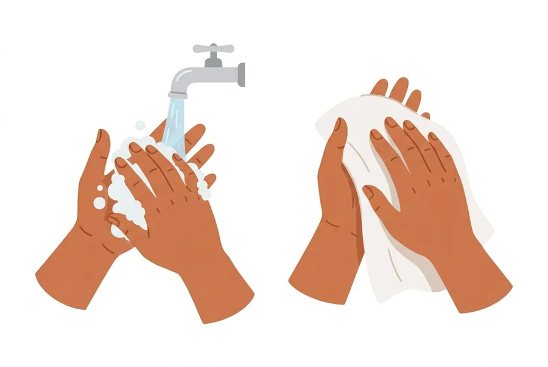
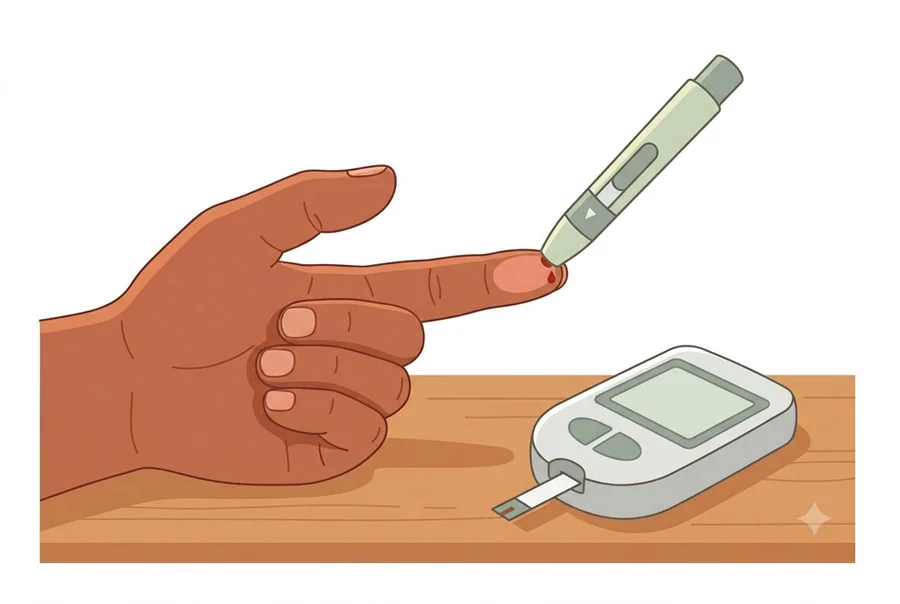
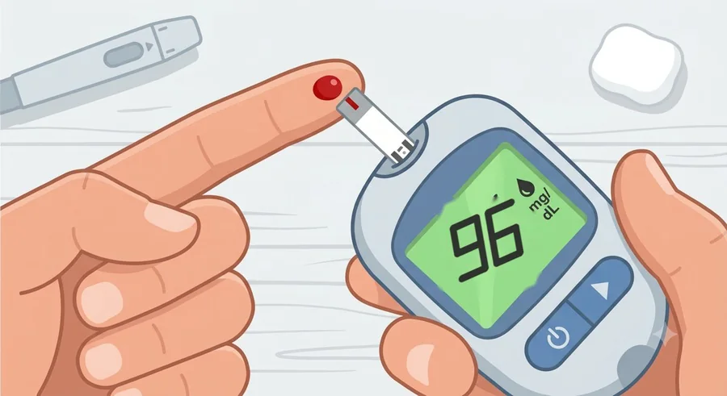
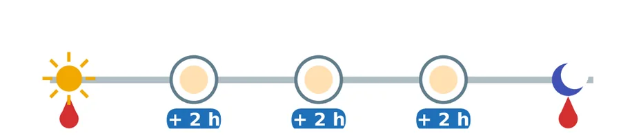
දියවැඩියාව සමඟ නිවැරදි ආහාර රටාව
நீரிழிவுடன் ஆரோக்கியமான உணவு
- පිඟානෙන් භාගයක්: එළවළු සහ කොළ වර්ග (මැල්ලුම්, බෝංචි, කැරට්, වට්ටක්කා, වම්බටු).
- හතරෙන් එකක්: බත්, ඉඳි ආප්ප හෝ වෙනත් පිෂ්ඨය. කෝප්පයකින් මැනගන්න.
- හතරෙන් එකක්: ප්රෝටීන් (මාළු, බිත්තර, කුකුළු මස්, පරිප්පු, කඩල, මුං ඇට).
- තෙල් හෝ පොල් ස්වල්පයක්. දිනකට වතුර වීදුරු 8 ක්.
- කුඩා ආහාර වේල් සහ අතුරුපස, සෑම දිනකම එකම වේලාවලට. ආහාර වේල් මඟ නොහරින්න. බඩගින්නේ නොසිටින්න.
- ගර්භනී: රාත්රී ආහාරයත් උදේ ආහාරයත් අතර පැය 10-12 ට වැඩි නොවිය යුතුය.
- தட்டில் பாதி: காய்கறிகள் மற்றும் கீரை வகைகள் (மல்லும், பீன்ஸ், கேரட், பூசணி, கத்தரிக்காய்).
- கால் பங்கு: சோறு, இடியாப்பம் அல்லது வேறு மாவுச்சத்து உணவு. கோப்பையால் அளந்து எடுக்கவும்.
- கால் பங்கு: புரதம் (மீன், முட்டை, கோழி, பருப்பு, கொண்டைக்கடலை, பாசிப்பயறு).
- சிறிதளவு எண்ணெய் அல்லது தேங்காய். நாளொன்றுக்கு 8 குவளை தண்ணீர்.
- சிறிய உணவுகளும் சிற்றுண்டிகளும், தினமும் ஒரே நேரங்களில். உணவை விட்டுவிடாதீர்கள். பட்டினி கிடக்காதீர்கள்.
- கர்ப்பிணி: இரவு உணவுக்கும் காலை உணவுக்கும் இடையே 10-12 மணி நேரத்திற்கு மேல் இடைவெளி கூடாது.

තෝරාගත යුතු සහ සීමා කළ යුතු ආහාර
தேர்ந்தெடுக்க வேண்டியவை, குறைக்க வேண்டியவை
| තෝරාගන්න | සීමා කරන්න හෝ වළක්වන්න |
|---|---|
| රතු බත් - කුඩා ප්රමාණයෙන්; තම්බාගත් මුං ඇට, කව්පි, කඩල | සුදු බත්, පාන්, නූඩ්ල්ස් විශාල ප්රමාණයෙන් |
| කොළ වර්ග සහ එළවළු | සීනි, හකුරු, කිතුල් පැණි, මී පැණි |
| මාළු, බිත්තර, කුකුළු මස්, පරිප්පු | රසකැවිලි, කේක්, බිස්කට්, කැවුම්, කොකිස් |
| කුඩා සම්පූර්ණ පලතුරු (පේර, පැපොල්) | පලතුරු යුෂ, බෝතල් බීම, සීනි දැමූ තේ |
| සීනි නැති ත්රීපෝෂ | බැදපු කෑම |
- "දියවැඩියා රෝගීන් සඳහා" යැයි කියන රසකැවිලිවලද සීනි ඉහළ නංවයි. ස්වල්ප වශයෙන් පමණක් අනුභව කරන්න.
- ආගමික වතාවන් හේතුවෙන් උපවාස කරන්නේ නම්: පළමුව සායනය සමඟ කතා කර උපදෙස් ලබා ගන්න
| தேர்ந்தெடுங்கள் | குறையுங்கள் அல்லது தவிர்க்கவும் |
|---|---|
| சிவப்பரிசிச் சோறு - சிறிய அளவில்; அவித்த பாசிப்பயறு, காராமணி, கொண்டைக்கடலை | வெள்ளைச் சோறு, பாண், நூடில்ஸ் பெரிய அளவில் |
| கீரை வகைகள், காய்கறிகள் | சீனி, வெல்லம், பனங்கருப்பட்டி, தேன் |
| மீன், முட்டை, கோழி, பருப்பு | இனிப்புகள், கேக், பிஸ்கட், கவுன், கொகிஸ் |
| சிறிய முழுப் பழங்கள் (கொய்யா, பப்பாளி) | பழச்சாறு, போத்தல் குளிர்பானம், சீனி போட்ட தேநீர் |
| சீனி இல்லாத திரிபோஷா | பொரித்த உணவுகள் |
- "நீரிழிவுக்கானது" என்று சொல்லப்படும் இனிப்புகளும் சர்க்கரையை உயர்த்தும். சிறிதளவு மட்டுமே எடுக்கவும்
- மத நோன்பு இருந்தால், முதலில் கிளினிக்கில் கலந்துபேசுங்கள்.
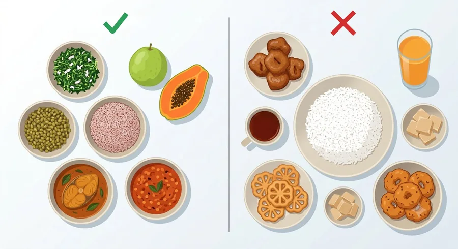
ක්රියාශීලීව සිටින්න
சுறுசுறுப்பாக இருங்கள்
- සෑම ආහාර වේලකින් පසුවම මිනිත්තු 10 ක් ඇවිදින්න, හෝ දිනකට මිනිත්තු 30 ක් ඇවිදින්න.
- ගර්භනී කාලයේදී, රුධිර වහනය, කරකැවිල්ල, පපුවේ වේදනාව, ගැබ් හැකිලීම හෝ දරුවාගේ චලනය අඩුවීම තිබේ නම් නවතා සායනයට දන්වන්න.
- ඉන්සියුලින් ගන්නේ නම්, හිස් බඩින් ව්යායාම නොකරන්න.
- ஒவ்வொரு உணவுக்குப் பின்னும் 10 நிமிடம் நடக்கவும், அல்லது நாளொன்றுக்கு 30 நிமிடம் நடக்கவும்.
- கர்ப்ப காலத்தில், இரத்தப்போக்கு, தலைச்சுற்றல், நெஞ்சு வலி, கருப்பை சுருக்கங்கள் அல்லது குழந்தையின் அசைவு குறைதல் இருந்தால் நிறுத்திவிட்டுக் கிளினிக்கிற்குத் தெரிவியுங்கள்.
- இன்சுலின் எடுத்தால், வெறும் வயிற்றில் உடற்பயிற்சி செய்ய வேண்டாம்.
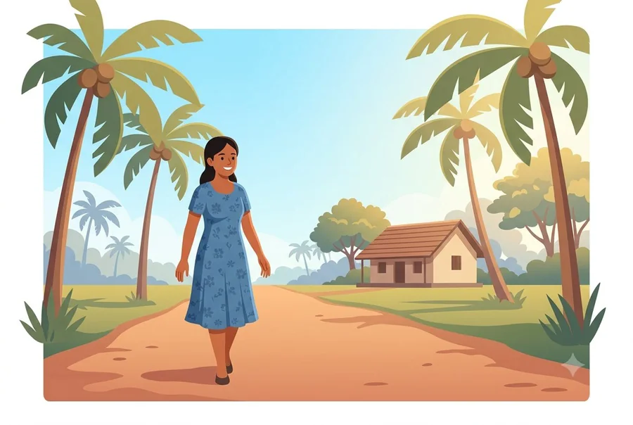
දියවැඩියා සඳහා බෙහෙත්
நீரிழிவுக்கான மருந்துகள்
- ගර්භනී නොවන: ටැබ්ලට් (උදා: මෙට්ෆෝමින්) සහ සමහර විට ඉන්සියුලින්, උපදෙස් ලද පරිදි ආහාර සමඟ ගන්න. ඔබට කැමති පරිදි නවත්වන්නට හෝ වෙනස් කරන්නට එපා.
- ගර්භනී: බොහෝ කාන්තාවන් ආහාර පාලනයෙන්, අවශ්ය නම් ඉන්සියුලින්වලින් පාලනය වේ. සමහරුන් මෙට්ෆෝමින් ගනී.
- ඉන්සියුලින් දරුවාට ආරක්ෂිතයි. එයට ඇබ්බැහි වීමක් නොවේ.
- සමහර දියවැඩියා ටැබ්ලට් ගර්භණීභාවයේදී ආරක්ෂිත නොවේ (උදා: ග්ලයික්ලසයිඩ්). ගැබ් ගැනීමට සැලසුම් කරන්නේ නම් සායනයට මේ බව කියන්න.
- ශල්යකර්මයකට පෙර, ඔබට දියවැඩියාව ඇති බව, ඔබව ශල්යකර්මයට පෙර පරීක්ෂා කරන සියලු වෛද්යවරුන්ට කියන්න. ඔබේ සටහන් පොත ගෙන එන්න.
- கர்ப்பமில்லாதவர்: மாத்திரைகள் (எ.கா. மெட்ஃபோர்மின்) மற்றும் சிலருக்கு இன்சுலின். அறிவுறுத்தியபடி உணவுடன் எடுக்கவும். நீங்களாகவே நிறுத்தவோ மாற்றவோ வேண்டாம்.
- கர்ப்பிணி: பெரும்பாலான பெண்களுக்கு உணவுக் கட்டுப்பாடு, தேவைப்பட்டால் இன்சுலின். சிலர் மெட்ஃபோர்மின் எடுப்பார்கள்.
- இன்சுலின் குழந்தைக்குப் பாதுகாப்பானது. அது போதை பழக்கமாகிவிடாது.
- சில நீரிழிவு மாத்திரைகள் கர்ப்பத்தில் பாதுகாப்பற்றவை (எ.கா. கிளிக்ளசைட்). கர்ப்பமாகத் திட்டமிட்டால் கிளினிக்கிற்குத் தெரிவியுங்கள்.
- அறுவைச் சிகிச்சைக்கு முன், உங்களைக் கவனிப்பவர்கள் எல்லோரிடமும் உங்களுக்கு நீரிழிவு இருப்பதைத் தெரிவித்து, உங்கள் குறிப்பேட்டைக் கொண்டுவாருங்கள்.
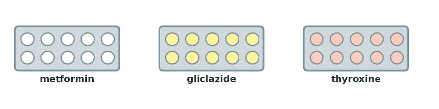
භාවිතා කරන ඉන්සියුලින් වර්ග දෙක (ඉන්සියුලින් භාවිතා කරන්නන් සඳහා)
இங்கு பயன்படுத்தும் இரண்டு இன்சுலின் வகைகள் (இன்சுலின் எடுப்பவர்களுக்கு)
| දිය වන (Actrapid) | අයිසොෆේන් (Insulatard) [CHECK: වෙළඳ නාමය] | |
|---|---|---|
| පෙනුම | ජලය මෙන් පැහැදිලියි | රෝල් කළ පසු කිරි පැහැයි (බොඳ) |
| කවදාද | ආහාරවලට පෙර | සාමාන්යයෙන් නිදාගැනීමට පෙර |
| ක්රියා කිරීම ආරම්භ වේ | මිනිත්තු 30 ක් පමණ | හෙමින් |
| අවදානම | ආහාරය ප්රමාද වුවහොත් සීනි අඩු වීම | රාත්රියේ සීනි අඩු වීම |
- දෙකම කිසිවිටෙක පටලවා නොගන්න. සෑම වතාවකම ලේබලය කියවන්න.
| கரையும் -soluble (Actrapid) | ஐசோஃபேன் (Insulatard) [CHECK: வணிகப் பெயர்] | |
|---|---|---|
| தோற்றம் | தண்ணீர் போலத் தெளிவானது | உருட்டிய பின் பால் போல் கலங்கலானது |
| எப்போது | உணவுக்கு முன் | பொதுவாக படுக்கைக்கு முன் |
| வேலை செய்யத் தொடங்குவது | சுமார் 30 நிமிடத்தில் | மெதுவாக |
| ஆபத்து | உணவு தாமதமானால் சர்க்கரை குறைதல் | இரவில் சர்க்கரை குறைதல் |
- இரண்டையும் ஒருபோதும் மாற்றிக் குழப்பிக்கொள்ளாதீர்கள். ஒவ்வொரு முறையும் லேபிளைப் படியுங்கள்.
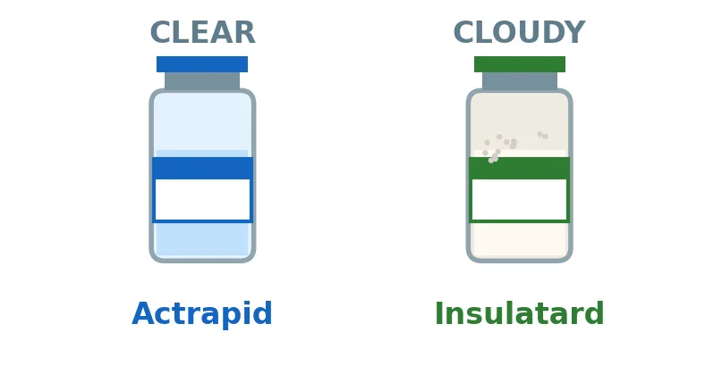
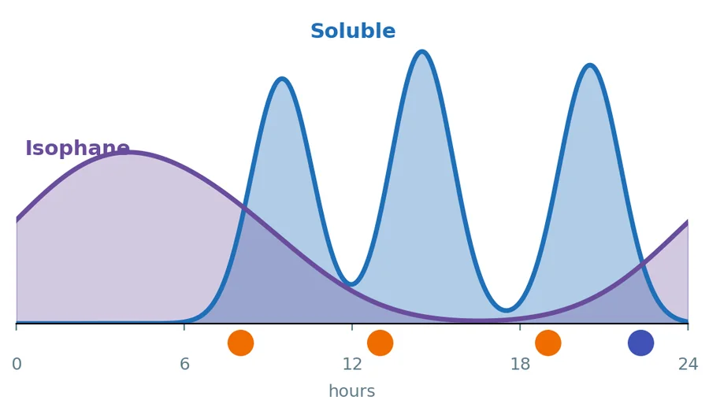
මුලින් ආහාරය. ඉන්පසු ඉන්සියුලින්. (ඉන්සියුලින් ගන්නා කාන්තාවන් සඳහා)
முதலில் உணவு. பிறகு இன்சுலின். (இன்சுலின் எடுப்பவர்கள்)
- දිය වන ඉන්සියුලින් මිනිත්තු 30 කින් පමණ ක්රියා කරයි. ආහාර ප්රමාද වුවහොත් සීනි ඉතා පහළ යයි.
- 1. ආහාරය පිසගෙන පිළියෙල කරන්න. 2. ඉන්පසු එන්නත ගන්න. 3. මිනිත්තු 30 ක් ඇතුළත ආහාර ගන්න.
- ආහාර ගත නොහැකි නම්, දිය වන ඉන්සියුලින් නොගන්න. සායනයෙන් උපදෙස් ලබාගන්න.
- கரையும் (Soluble) இன்சுலின் சுமார் 30 நிமிடத்தில் வேலை செய்யும். உணவு தாமதமானால் சர்க்கரை மிகவும் குறையும்.
- 1. உணவைச் சமைத்து மேசையில் வையுங்கள். 2. பிறகு ஊசி போடுங்கள். 3. 30 நிமிடத்திற்குள் சாப்பிடுங்கள்.
- சாப்பிட முடியாவிட்டால், கரையும்(soluble) இன்சுலினைப் போடாதீர்கள். கிளினிக்கில் கேளுங்கள்.
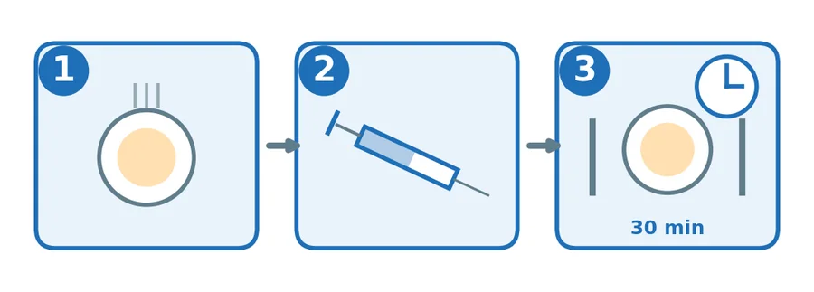
වයල් එකකින් ඉන්සියුලින් ඇදීම (ඉන්සියුලින් ගන්නා කාන්තාවන් සඳහා)
குப்பியிலிருந்து இன்சுலின் எடுத்தல் (இன்சுலின் எடுப்பவர்கள்)
මෙහි වයල් මිලිලීටරයකට ඒකක 100 කි. මෙහි සිරින්ජ ඒකක 0-100 ලකුණු කර ඇත. ඔබට ලියා දී ඇති අංකය දක්වා ඇදගන්න.
- අත් සෝදන්න. ලේබලය, වර්ගය සහ කල් ඉකුත් වන දිනය පරීක්ෂා කරන්න.
- බොඳ (කිරි පැහැ) ඉන්සියුලින්: වයල් එක අත්ලවල් අතර 10 වතාවක් රෝල් කරන්න. සොලවන්න එපා.
- රබර් පියන පිස දමන්න.
- සිරින්ජයට ඔබේ මාත්රාව දක්වා වාතය ඇද ගන්න.
- වාතය වයල් එක තුළට තල්ලු කරන්න.
- වයල් එක යටිකුරු කරන්න. ඔබේ මාත්රා අංකය දක්වා ඉන්සියුලින් ඇදගන්න.
- බුබුළු අයින් කරන්න (සිරින්ජය තට්ටු කර). අංකය නැවත පරීක්ෂා කරන්න.
இங்குள்ள குப்பிகள் ஒரு மி.லி.க்கு 100 அலகுகள். இங்குள்ள சிரிஞ்சுகளில் 0-100 அலகுகள் குறிக்கப்பட்டுள்ளன. உங்களுக்கு எழுதித் தரப்பட்ட எண் வரை இழுத்து எடுங்கள்.
- கைகளைக் கழுவுங்கள். லேபிள், வகை, காலாவதி தேதி ஆகியவற்றைச் சரிபார்க்கவும்.
- கலங்கலான (பால் நிற) இன்சுலின்: குப்பியை இரு உள்ளங்கைகளுக்கு இடையே 10 முறை உருட்டுங்கள். குலுக்க வேண்டாம்.
- ரப்பர் மூடியைத் துடைக்கவும்.
- சிரிஞ்சில் உங்கள் அளவு வரை காற்றை இழுக்கவும்.
- காற்றைக் குப்பிக்குள் செலுத்துங்கள்.
- குப்பியைத் தலைகீழாகப் பிடியுங்கள். உங்கள் அளவு எண் வரை இன்சுலினை இழுக்கவும்.
- குமிழிகளை (சிரிஞ்சைத் தட்டி) வெளியேற்றுங்கள். எண்ணை மீண்டும் சரிபார்க்கவும்.
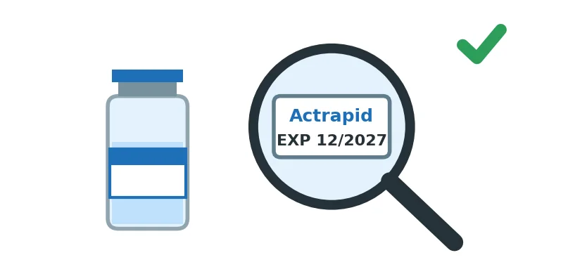
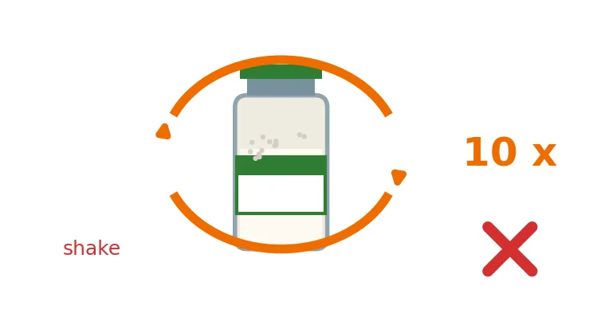
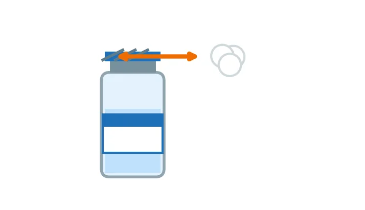
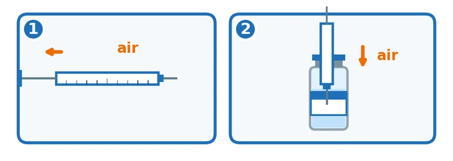
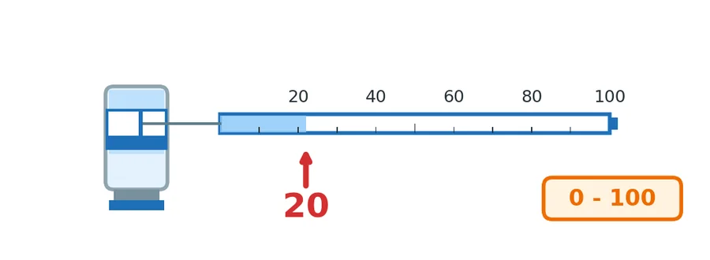
පැහැදිලි සහ බොඳ ඉන්සියුලින් එකම සිරින්ජයේ මිශ්ර කිරීම (සායනයේදී උගන්වා ඇත්නම් පමණි)
தெளிவான, கலங்கலான இன்சுலினை ஒரே சிரிஞ்சில் கலத்தல் (கிளினிக்கில் கற்றுக்கொடுத்திருந்தால் மட்டும்)
මතක තබාගන්න: පැහැදිලි ඉන්සියුලින් එක බොඳ එකට පෙර.
- බොඳ වයල් එකට වාතය ඇද දමන්න. ඉඳිකටුව ඉවත් කරන්න. ඉන්සියුලින් ඇදගන්න එපා.
- පැහැදිලි වයල් එකට වාතය ඇද දමන්න. පැහැදිලි මාත්රාව ඇදගන්න.
- ඉඳිකටුව බොඳ වයල් එකට දමන්න. මුළු අංකය දක්වා ඇදගන්න.
- උදාහරණය: පැහැදිලි 6 + බොඳ 10 = 16 දක්වා ඇදගන්න.
- බොඳ එක වැඩියෙන් ඇදගත්තොත්, සියල්ල ඉවත දමා නැවත පටන් ගන්න.
நினைவில் வையுங்கள்: தெளிவானது முதலில், கலங்கலானது பின்னர்.
- கலங்கலான குப்பிக்குள் காற்றைச் செலுத்துங்கள். ஊசியை வெளியே எடுங்கள். இன்சுலினை இழுக்க வேண்டாம்.
- தெளிவான குப்பிக்குள் காற்றைச் செலுத்துங்கள். தெளிவான அளவை இழுத்து எடுங்கள்.
- ஊசியைக் கலங்கலான குப்பிக்குள் செலுத்துங்கள். மொத்த எண் வரை இழுக்கவும்.
- எடுத்துக்காட்டு: தெளிவானது 6 + கலங்கலானது 10 = 16 வரை இழுக்கவும்.
- கலங்கலானது அதிகமாக வந்துவிட்டால், எல்லாவற்றையும் கொட்டிவிட்டு மீண்டும் தொடங்குங்கள்.
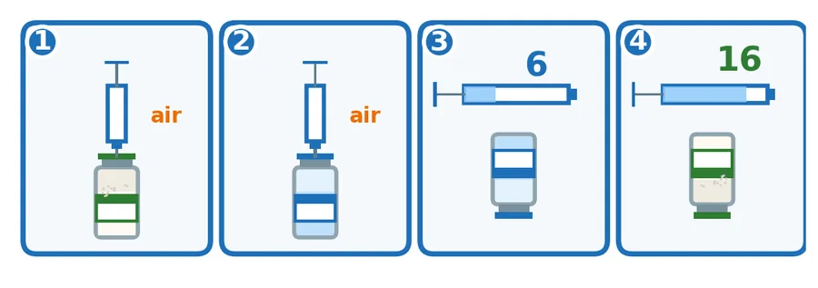
එන්නත ලබා ගැනීම (ඉන්සියුලින් ගන්නා කාන්තාවන් සඳහා)
ஊசி போடுதல் (இன்சுலின் எடுப்பவர்கள்)
- පිරිසිදු, වියළි ස්ථානයක් තෝරන්න (D-14).
- ඉඳිකටුව කෙළින්ම ඇතුළු කරන්න. ඔබ කෙට්ටු කෙනෙක් නම් සම ඇඹරගන්න.
- පිස්ටනය සෙමින් සම්පූර්ණයෙන් තල්ලු කරන්න.
- ඉවතට ගැනීමට පෙර 10 දක්වා ගණන් කරන්න.
- අතුල්ලන්න එපා.
- පියන නැවත දමන්න එපා. සිරින්ජය තියුණු දේ දමන බෝතලයට (පියනක් සහිත ශක්තිමත් ප්ලාස්ටික් බෝතලයක්) දමන්න.
- සෑම වතාවකම අලුත් සිරින්ජයක් භාවිතා කරන්න.
- சுத்தமான, உலர்ந்த இடத்தைத் தேர்ந்தெடுங்கள் (D-14).
- ஊசியை நேராகச் செலுத்துங்கள். மெலிந்தவர்கள் தோலைச் சிறிது பிடித்துக்கொள்ளுங்கள்.
- உலக்கையை மெதுவாக முழுவதும் அழுத்துங்கள்.
- வெளியே எடுப்பதற்கு முன் 10 வரை எண்ணுங்கள்.
- தேய்க்க வேண்டாம்.
- மூடியை மீண்டும் போட வேண்டாம். சிரிஞ்சை கூரான பொருட்களுக்கான போத்தலில் (மூடியுடன் கூடிய உறுதியான பிளாஸ்டிக் போத்தல்) போடுங்கள்.
- ஒவ்வொரு முறையும் புதிய சிரிஞ்ச்.
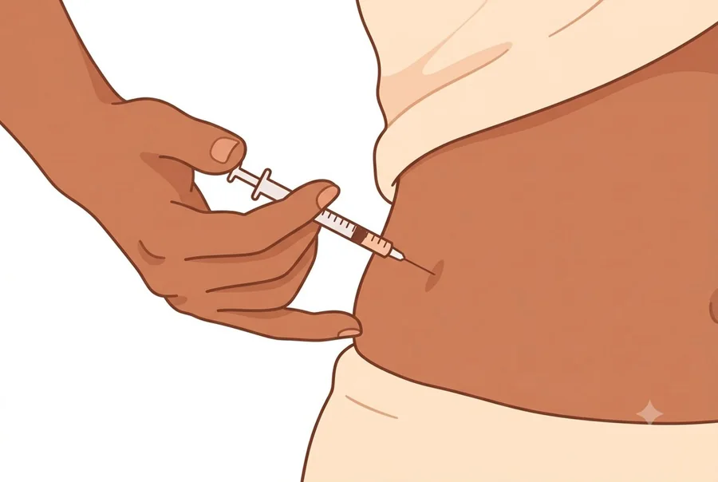
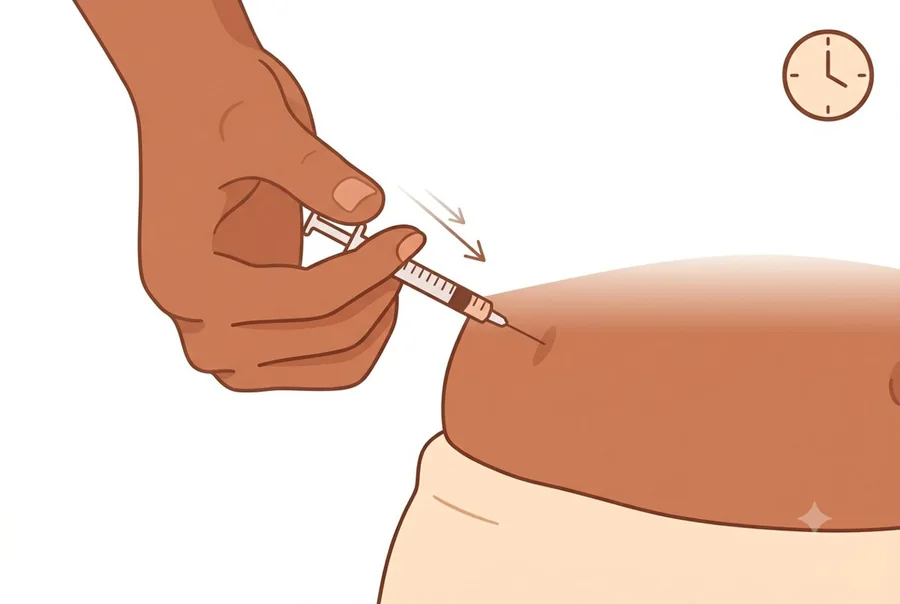
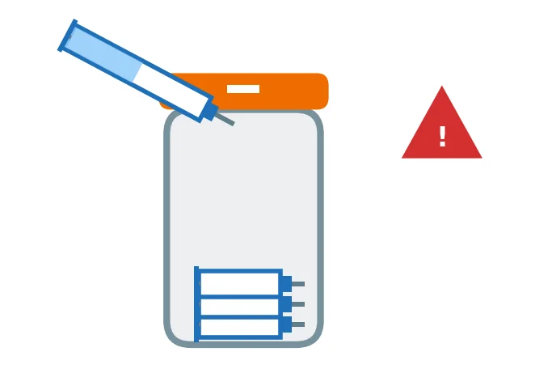
එන්නත ලබා ගත යුතු ස්ථාන (ඉන්සියුලින් ලබාගන්නන් සඳහා )
ஊசி போடும் இடங்கள் (இன்சுலின் எடுப்பவர்கள்)
| ස්ථානය | භාවිතය |
|---|---|
| උදරය (නාභියේ සිට සෙන්ටිමීටර 5 ක් ඈත්ව; ගර්භණීභාවයේ අග කාලයේ පැති පැත්ත) | ආහාරවලට පෙර දිය වන ඉන්සියුලින් |
| කලවය (ඉදිරිපස, පිටත) | නිදාගැනීමට පෙර අයිසොෆේන් |
| ඉහළ අතේ පිටුපස, තට්ටම | ඕනෑම එකක් |
- සෑම වතාවකම ස්ථානය වෙනස් කරන්න. පෙර ස්ථානයෙන් සෙන්ටිමීටර 2 ක් පමණ ඉවතින් තබන්න.
- ගැටිති, කැළැල් හෝ තැලුණු තැන්වලට එන්නත් නොකරන්න. ගැටිති ගැන සායනයට කියන්න.
| இடம் | பயன்பாடு |
|---|---|
| வயிறு (தொப்புளிலிருந்து 5 செ.மீ. விலகி; கர்ப்பத்தின் பிற்பகுதியில் பக்கவாட்டில்) | உணவுக்கு முன் கரையும் (Soluble) இன்சுலின் |
| தொடை (முன்புறம், வெளிப்புறம்) | படுக்கைக்கு முன் ஐசோஃபேன் |
| மேல் கையின் பின்புறம், புட்டம் | எதுவும் |
- ஒவ்வொரு முறையும் இடத்தை மாற்றுங்கள். முந்தைய இடத்திலிருந்து சுமார் 2 செ.மீ. தள்ளி வையுங்கள்.
- கட்டிகள், தழும்புகள், காயம்பட்ட இடங்களில் போட வேண்டாம். கட்டிகள் இருந்தால் கிளினிக்கிற்குத் தெரிவியுங்கள்.
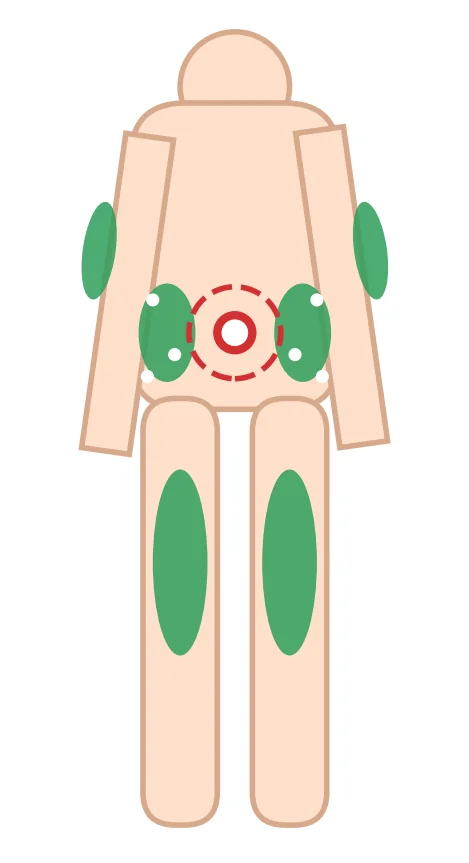
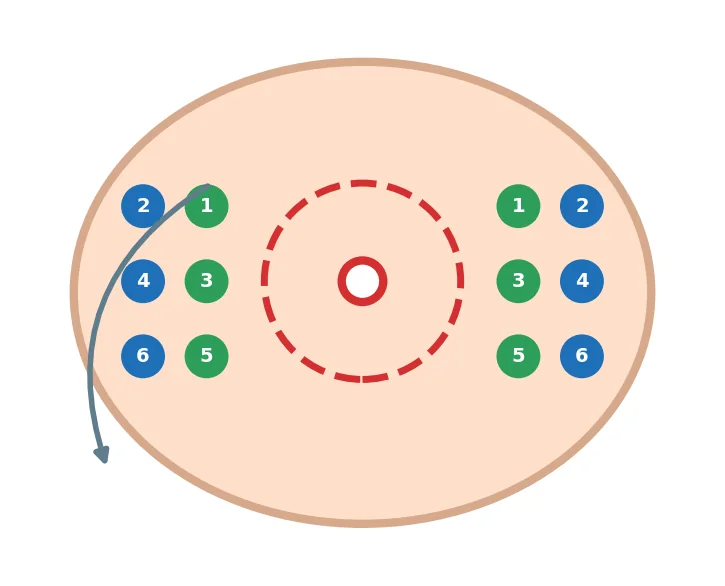
ඉන්සියුලින් ගබඩා කිරීම (ඉන්සියුලින් ලබාගන්නන් සඳහා)
இன்சுலினைச் சேமித்தல் (இன்சுலின் எடுப்பவர்கள்)
- විවෘත නොකළ වයල්: ශීතකරණයේ (කිසිවිටෙක ෆ්රීසරයේ නොවේ).
- භාවිතා කරන වයල්: හැකි නම් ශීතකරණයේ, නැතහොත් සෙවණ සහිත සිසිල් තැනක. විවෘත කළ දිනය ලියන්න. සති 4 ක් ඇතුළත භාවිතා කර ඉන්පසු ඉවත දමන්න.
- කිසිවිටෙක ඉන්සියුලින් හිරු එළියේ, රත් වූ වාහනයක, හෝ ලිපක් අසල නොතබන්න.
- භාවිතා නොකරන්න: ශීත කළ ඉන්සියුලින්, බොඳ පැහැති පැහැදිලි ඉන්සියුලින්, ගැටිති සහිත බොඳ ඉන්සියුලින්, හෝ කල් ඉකුත් වූ ඉන්සියුලින්.
- Regifoam පෙට්ටියෙන් ගෙදර ගෙන යාම: අයිස් පැකට් රෙදි කඩකින් ඔතන්න, වයල් අයිස් හා ස්පර්ශ නොවිය යුතුයි. කෙළින්ම ගෙදර යන්න. පැමිණි විගස ශීතකරණයේ තබන්න.
- திறக்காத குப்பிகள்: குளிர்சாதனப் பெட்டியில் (ஒருபோதும் உறைவிப்பானில் அல்ல).
- பயன்பாட்டில் உள்ள குப்பி: முடிந்தால் குளிர்சாதனப் பெட்டியில், அல்லது நிழலான குளிர்ச்சியான இடத்தில். திறந்த தேதியை எழுதுங்கள். 4 வாரங்களுக்குள் பயன்படுத்தி பின்னர் தூக்கியெறியுங்கள்.
- ஒருபோதும் இன்சுலினை வெயிலில், சூடான வாகனத்தில், அல்லது அடுப்புக்கு அருகில் வைக்காதீர்கள்.
- பயன்படுத்த வேண்டாம்: உறைந்த இன்சுலின், கலங்கிய தெளிவான இன்சுலின், கட்டிகளுள்ள கலங்கலான இன்சுலின், அல்லது காலாவதியானது.
- Regifoam பெட்டியில் வீட்டுக்குக் கொண்டு செல்லுதல்: ஐஸ் பேக்குகளைத் துணியில் சுற்றுங்கள், குப்பிகள் ஐஸ் மீது படக்கூடாது. நேராக வீட்டுக்குச் செல்லுங்கள். வந்தவுடன் குளிர்சாதனப் பெட்டியில் வையுங்கள்.
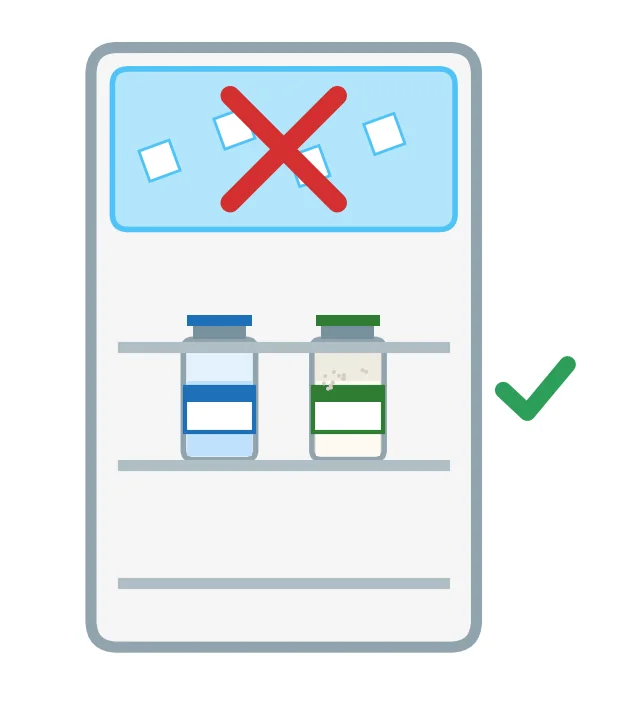
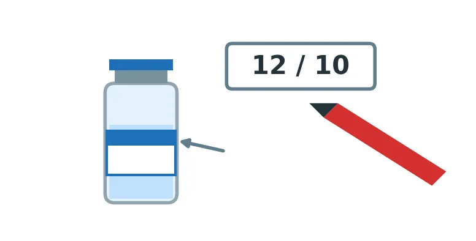
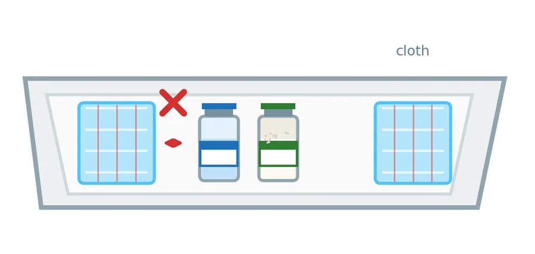
සීනි අඩු වීම: 70 ට අඩු (ඉන්සියුලින් සහ ටැබ්ලට් ගන්නන්)
சர்க்கரை குறைதல்: 70 க்குக் கீழ் (இன்சுலின், மாத்திரை எடுப்பவர்கள்)
- සලකුණු: වෙව්ලීම, දහඩිය දැමීම, හදවත වේගයෙන් ගැහීම, බඩගින්න, කරකැවිල්ල, ඔළු කැක්කුම, සිතේ පටලැවිලි සහගත බව.
- හේතු: ප්රමාද වූ හෝ මඟ හැරුණු ආහාර වේල, ඉන්සියුලින් වැඩිවීම, ව්යායාම, වමනය.
- කළ යුත්තේ:
- පරීක්ෂා කරන්න. අඩු නම්, හෝ අඩු යැයි හැඟී පරීක්ෂා කළ නොහැකි නම්, වහාම ප්රතිකාර කරන්න.
- වතුර වීදුරුවක අඩකට තේ හැඳි 3 ක් සීනි දමා ගන්න, හෝ පැණි බීමක්.
- මිනිත්තු 15 ක් රැඳී සිටින්න. නැවත පරීක්ෂා කරන්න. තවම අඩු නම් නැවත කරන්න.
- ඉන්පසු කෙටි ආහාරයක් හෝ ප්රධාන ආහාරය ගන්න.
- සැමවිටම සීනි රැගෙන යන්න. ඔබේ පවුලේ අයට කියන්න.
- ඇයට ගිල ගත නොහැකි නම් හෝ සිහිසුන් නම්: කටට කිසිවක් නොදමන්න. ඇයව පැත්තකට හරවා තබන්න. වහාම රෝහලට යන්න.
- සමහර රුධිර පීඩන සහ තයිරොයිඩ් ටැබ්ලට් (ලැබටලෝල්, ප්රොප්රැනොලෝල්) මෙම සලකුණු සඟවයි. ඔබේ පරීක්ෂාව මත රඳා පවතින්න.
- அறிகுறிகள்: நடுக்கம், வியர்வை, இதயம் வேகமாகத் துடித்தல், பசி, தலைச்சுற்றல், தலைவலி, குழப்பம்.
- காரணங்கள்: தாமதமான அல்லது தவறவிட்ட உணவு, அதிக இன்சுலின், உடற்பயிற்சி, வாந்தி.
- செய்ய வேண்டியது:
- பரிசோதியுங்கள். குறைவாக இருந்தால், அல்லது குறைவாக உணர்ந்து பரிசோதிக்க முடியாவிட்டால், உடனே சிகிச்சை செய்யுங்கள்.
- அரை குவளை தண்ணீரில் 3 தேக்கரண்டி சீனி கலந்து குடியுங்கள், அல்லது இனிப்புப் பானம்.
- 15 நிமிடம் காத்திருங்கள். மீண்டும் பரிசோதியுங்கள். இன்னும் குறைவாக இருந்தால் மீண்டும் செய்யுங்கள்.
- பிறகு சிற்றுண்டி அல்லது உணவு சாப்பிடுங்கள்.
- எப்போதும் சீனியைக் கையில் வைத்திருங்கள். குடும்பத்தினருக்குச் சொல்லுங்கள்.
- அவரால் விழுங்க முடியாவிட்டால் அல்லது மயக்கமாக இருந்தால்: வாயில் எதுவும் ஊற்ற வேண்டாம். ஒரு பக்கமாகச் சாய்த்துப் படுக்க வையுங்கள். உடனே மருத்துவமனைக்குச் செல்லுங்கள்.
- சில இரத்த அழுத்த, தைராய்டு மாத்திரைகள் (லபெடலால், புரோப்ரனோலால்) இந்த அறிகுறிகளை மறைக்கக்கூடும். பரிசோதனையை நம்புங்கள்.
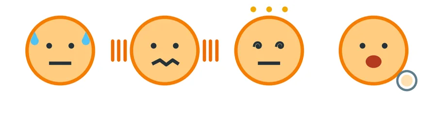
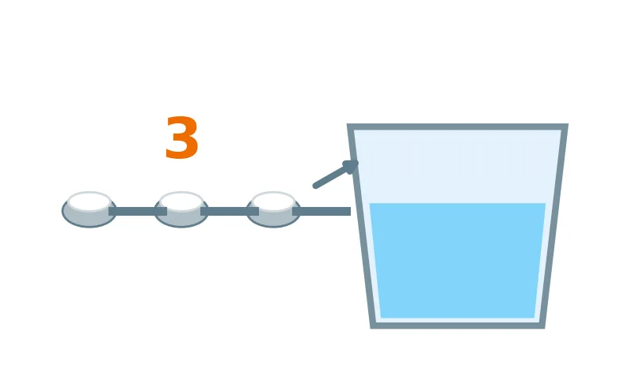
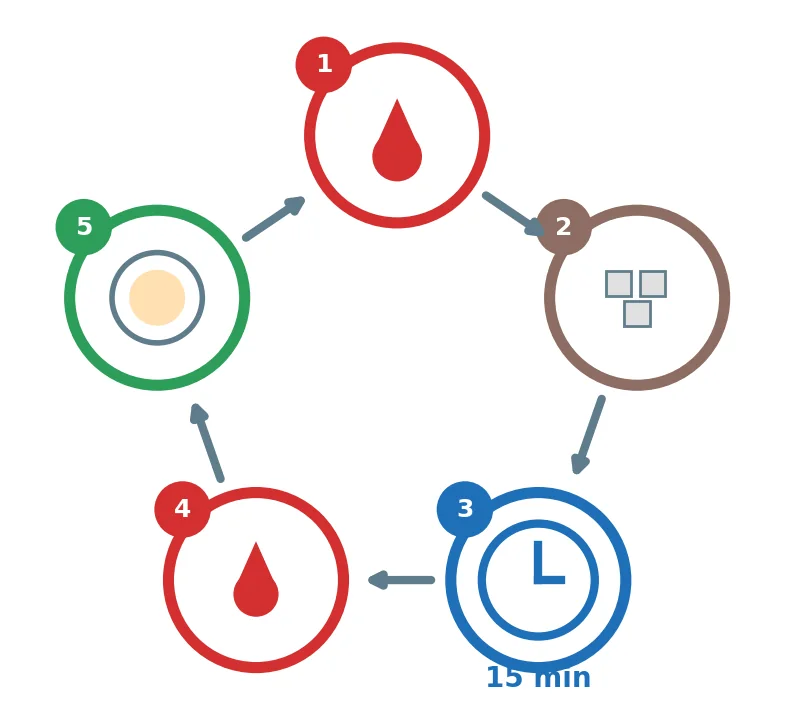
ඔබට අසනීප වූ විට (සියලුදෙනා)
உடல்நலமில்லாதபோது (எல்லோரும்)
- අසනීප නිසා කිසිවිටෙක ඉන්සියුලින් නොනවත්වන්න.
- වඩාත් නිතර පරීක්ෂා කරන්න. දියර වැඩිපුර පානය කරන්න.
- පහත සඳහන් ලකුණු ඇතනම් රෝහලට එන්න: වමනය කර දියර රඳවා ගත නොහැකි නම්, දැඩි පිපාසය සහ නිදිමත, වේගවත් හුස්ම ගැනීම හෝ බඩේ වේදනාව.
- සීනි ඉලක්කයට වඩා දෙවරක් ඉහළ නම්: එදිනම සායනයට දන්වන්න.
- உடல்நலமில்லாததால் இன்சுலினை ஒருபோதும் நிறுத்தாதீர்கள்.
- அடிக்கடி பரிசோதியுங்கள். திரவங்களை அதிகம் அருந்துங்கள்.
- மருத்துவமனைக்கு வாருங்கள்: வாந்தியால் திரவங்களை உள்ளே தங்க வைக்க முடியாவிட்டால், அதிகத் தாகம், தூக்கக் கலக்கம், வேகமான சுவாசம் அல்லது வயிற்று வலி இருந்தால்.
- சர்க்கரை இலக்கை விட இரு முறை அதிகமாக இருந்தால்: அதே நாளில் கிளினிக்கிற்குத் தெரிவியுங்கள்.
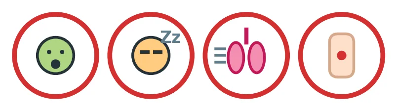
ගර්භනී කාලයේ දියවැඩියාව: දරුවා සහ ප්රසූතිය (ගර්භනී)
கர்ப்பகால நீரிழிவு: குழந்தையும் பிரசவமும் (கர்ப்பிணி)
- දරුවාගේ චලනය: සති 28 පමණ සිට දරුවාගේ සාමාන්ය චලන රටාව හඳුනාගන්න. චලනය අඩු වුවහොත් එවෙලෙහිම පැමිණෙන්න.
- ප්රසූතිය ඔබේ සායනය සමඟ සැලසුම් කෙරේ. ඔබේ සටහන් පොත, බෙහෙත් සහ සායන පොත ගෙන එන්න.
- ප්රසූතියෙන් පසු: GDM ටැබ්ලට් හෝ ඉන්සියුලින් නවතී. කලින් සිට ඇති දියවැඩියාව: ඉන්සියුලින් අවශ්යතාව අඩු වේ. නව මාත්රාවක් ලබා දෙනු ලැබේ.
- මුල් කාලයේම කිරි දෙන්න. කිරි දීමේදී ඉන්සියුලින් සහ මෙට්ෆෝමින් ආරක්ෂිතයි.
- குழந்தையின் அசைவுகள்: சுமார் 28 வாரங்களிலிருந்து குழந்தையின் வழக்கமான அசைவு முறையைக் கவனியுங்கள். அசைவு குறைந்தால் அதே நாளில் வாருங்கள்.
- பிரசவம் உங்கள் கிளினிக்குடன் திட்டமிடப்படும். உங்கள் குறிப்பேடு, மருந்துகள், கிளினிக் புத்தகத்தைக் கொண்டுவாருங்கள்.
- பிரசவத்திற்குப் பின்: GDM மாத்திரைகள் அல்லது இன்சுலின் நிறுத்தப்படும். முன்பே இருந்த நீரிழிவு: இன்சுலின் தேவை குறையும். புதிய அளவு தரப்படும்.
- சீக்கிரமே தாய்ப்பால் கொடுங்கள். தாய்ப்பாலூட்டும்போது இன்சுலினும் மெட்ஃபோர்மினும் பாதுகாப்பானவை.
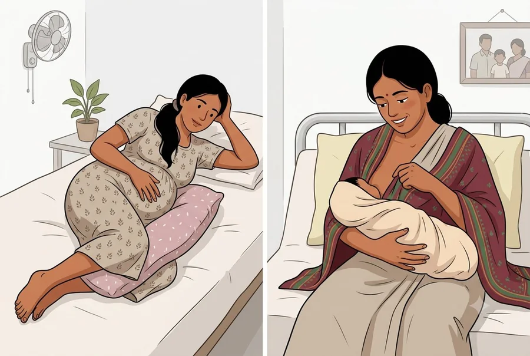
ප්රසූතියෙන් පසු: සීනි පරීක්ෂාව (ගර්භනී)
பிரசவத்திற்குப் பின்: சர்க்கரைப் பரிசோதனை (கர்ப்பிணி)
- ප්රසූතියෙන් සති 6-12 කට පසු සීනි පරීක්ෂාවක් (OGTT) සඳහා පැමිණෙන්න. දරුවාගේ එන්නත් පැමිණීම සමඟ වෙන් කරගන්න.
- සාමාන්ය නම්: සෑම වසරකම පරීක්ෂා කරන්න.
- GDM තිබූ කාන්තාවන්ට වර්ග 2 දියවැඩියාව වැළඳීමේ අවදානම වැඩිය. නිරෝගී ආහාර, ව්යායාම සහ නිසි බර මගින් එම අවදානම අඩු කළ හැක.
- ඊළඟ ගර්භණීභාවය: සායනයට කලින්ම දන්වා සැලසුම් කරන්න.
- பிரசவத்திற்குப் பின் 6-12 வாரங்களில் சர்க்கரைப் பரிசோதனைக்கு (OGTT) வாருங்கள். குழந்தையின் தடுப்பூசி வருகையுடன் சேர்த்துப் பதிவு செய்யுங்கள்.
- இயல்பாக இருந்தால்: ஆண்டுதோறும் பரிசோதியுங்கள்.
- GDM இருந்த பெண்களுக்கு வகை 2 நீரிழிவு வரும் வாய்ப்பு அதிகம். ஆரோக்கிய உணவு, உடற்பயிற்சி, சரியான எடை ஆகியவை இந்த ஆபத்தைக் குறைக்கும்.
- அடுத்த கர்ப்பம்: முன்கூட்டியே கிளினிக்கிற்குத் தெரிவித்துத் திட்டமிடுங்கள்.
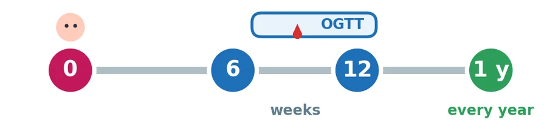
නාරිවේද කාන්තාවන්ගේ දියවැඩියාව (ගර්භනී නොවන)
மகளிர் நோய் கிளினிக் பெண்களில் நீரிழிவு (கர்ப்பமில்லாதவர்)
- ශල්යකර්මයට පෙර: ඔබේ සටහන් පොත ගෙන එන්න. එදින ඔබේ බෙහෙත් වෙනස් කරනු ලැබිය හැක. උපදෙස් නොලැබුණහොත් ඉන්සියුලින් නොනවත්වන්න.
- ශල්යකර්මයෙන් පසු: හොඳ සීනි පාලනය යනු වේගවත් සුවය සහ අඩු ආසාදනයි.
- යීස්ට් ආසාදනය (කැසීම, සුදු ස්රාවය) සහ මුත්රා ආසාදන සීනි ඉහළ විට වැඩියෙන් වේ. සායනයට කියන්න.
- PMOS සහ අක්රමවත් ඔසප් දියවැඩියාව වැළඳීමේ අවදානම වැඩි කරයි. වසරකට වරක් සීනි පරීක්ෂා කරන්න.
- ගැබ් ගැනීමට සැලසුම් කරනවාද? කලින් පැමිණෙන්න, බෙහෙත් සහ සීනි ආරක්ෂිත මට්ටමකට ගෙන ඒමට.
- அறுவைச் சிகிச்சைக்கு முன்: உங்கள் குறிப்பேட்டைக் கொண்டுவாருங்கள். அன்று உங்கள் மருந்துகள் மாற்றப்படலாம். சொல்லப்படாவிட்டால் இன்சுலினை நிறுத்த வேண்டாம்.
- அறுவைச் சிகிச்சைக்குப் பின்: நல்ல சர்க்கரைக் கட்டுப்பாடு என்றால் வேகமாக ஆறுதல், குறைவான தொற்று.
- பூஞ்சைத் தொற்று (அரிப்பு, வெள்ளைப்படுதல்) மற்றும் சிறுநீர்த் தொற்றுகள் சர்க்கரை அதிகமாக இருக்கும்போது அதிகம் வரும். கிளினிக்கிற்குத் தெரிவியுங்கள்.
- PMOS மற்றும் ஒழுங்கற்ற மாதவிடாய் நீரிழிவு வரும் வாய்ப்பை அதிகரிக்கும். ஆண்டுக்கு ஒருமுறை சர்க்கரை பரிசோதியுங்கள்.
- கர்ப்பமாகத் திட்டமிடுகிறீர்களா? முதலில் வாருங்கள், மருந்துகளையும் சர்க்கரையையும் பாதுகாப்பான நிலைக்குக் கொண்டுவர.
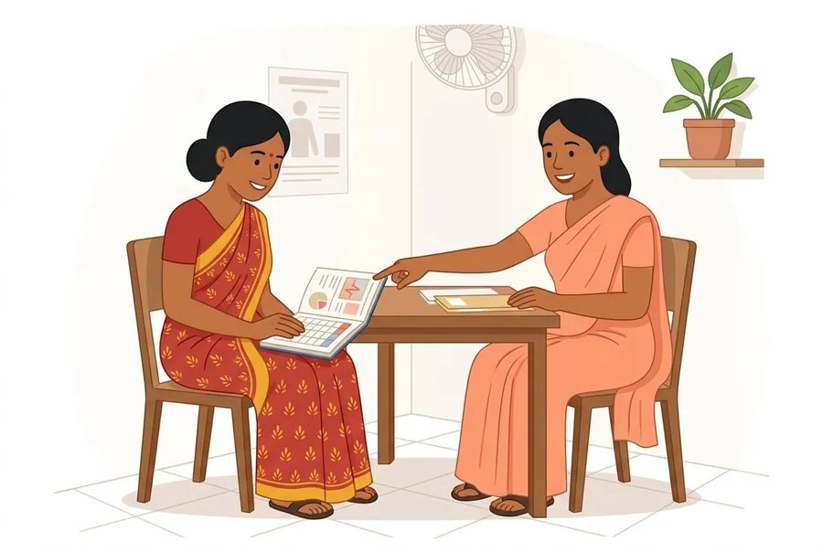
මිථ්යා සහ සත්ය (සියලුදෙනා)
கட்டுக்கதைகளும் உண்மைகளும் (எல்லோரும்)
| මිථ්යාව | සත්යය |
|---|---|
| "ඉන්සියුලින් මගේ දරුවාට හානි කරයි." | ඉහළ සීනි දරුවාට හානිකරයි. ඉන්සියුලින් ආරක්ෂිතයි. |
| "ඉන්සියුලින් පටන් ගත්තොත් කවදාවත් නවත්වන්න බෑ." | GDM වලට භාවිතා කරන ප්ප්ඉන්සියුලින් ප්රසූතියෙන් පසු නවතී. |
| "මම දෙදෙනෙකුට කෑමට ඕනෑ." | ටිකක් වැඩියෙන් පමණි, දෙගුණයක් නොවේ. |
| "සීනි නැති රසකැවිලි නිදහස්." | ස්වල්ප වශයෙන් පමණි. |
| "දියවැඩියාව කියන්නේ බත් නැහැ." | මනින ලද ප්රමාණයෙන් බත් කෑමට කමක් නැත. |
| கட்டுக்கதை | உண்மை |
|---|---|
| "இன்சுலின் என் குழந்தைக்குத் தீங்கு செய்யும்." | அதிகச் சர்க்கரையே குழந்தைக்குத் தீங்கு. இன்சுலின் பாதுகாப்பானது. |
| "இன்சுலின் ஆரம்பித்தால் ஒருபோதும் நிறுத்த முடியாது." | GDM இன்சுலின் பிரசவத்திற்குப் பின் நிறுத்தப்படும். |
| "நான் இருவருக்குச் சாப்பிட வேண்டும்." | சற்றுக் கூடுதல் மட்டும்; இரு மடங்கு அல்ல. |
| "சீனி இல்லாத இனிப்புகள் தடையில்லை." | சிறிதளவு மட்டுமே. |
| "நீரிழிவு என்றால் சோறு கூடாது." | அளந்த அளவில் சோறு சாப்பிடலாம். |